Estudo de caso UX/UI · end to end · 2026
NutriFlow, dieta saudável sempre à disposição
Transformar o plano alimentar do nutricionista em refeições prontas na sua porta, tão fácil quanto pedir delivery.

O problema e a solução
Problema. Pessoas precisam seguir uma dieta prescrita por um nutricionista, mas encontram dificuldades para preparar ou pedir essas refeições, por elas serem personalizadas e feitas de forma artesanal.
Solução. O NutriFlow é um app que transforma o plano alimentar do nutricionista em rotina prática: a IA lê o plano enviado (foto ou PDF), organiza as refeições automaticamente e entrega as refeições prontas em casa, ajudando o usuário a manter a dieta prescrita.
Como tornar seguir a dieta tão simples quanto pedir no iFood?
É esse o problema que o NutriFlow tenta resolver: a distância entre o que o nutricionista recomenda e o que a pessoa realmente come no dia a dia. Comparei com o iFood de propósito, o parâmetro de conveniência que todo mundo já tem na cabeça, e ele deixa a lacuna óbvia: pedir besteira é fácil, seguir a dieta é que dá trabalho.
O mercado de saúde alimentar no Brasil é gigante e continua crescendo. Segundo dados do Ministério da Saúde (2024), mais de 60% dos brasileiros estão acima do peso, e o mercado de alimentação saudável movimenta mais de R$ 40 bilhões por ano no país.
Um estudo qualitativo da USP com pacientes que abandonaram tratamento nutricional (Santiago et al., 2023, RASBRAN) identificou a dificuldade de acesso a alimentos como uma das cinco principais categorias de motivos de abandono, junto à rigidez da dieta e à dificuldade de adaptar o plano à rotina diária.
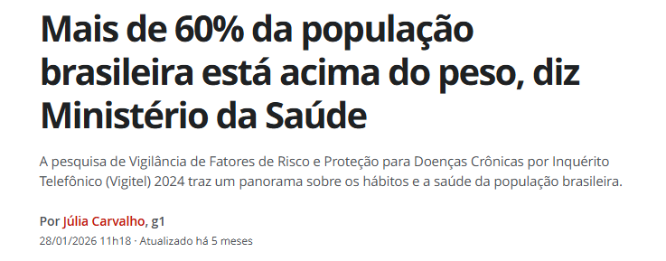
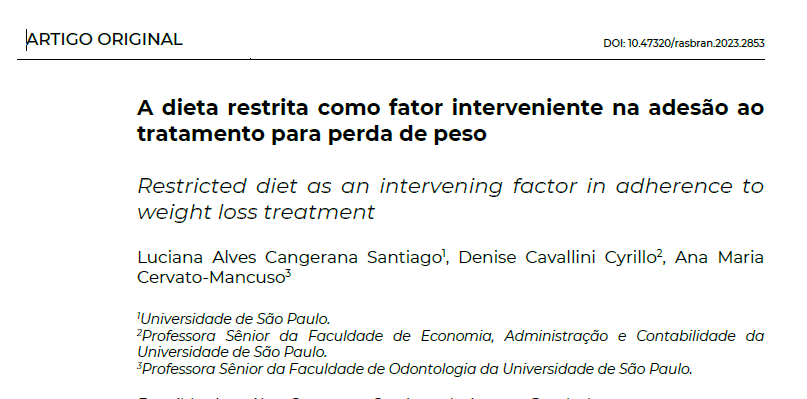
Benchmarking e Matriz CSD
Analisei o mercado de delivery de comida, kits de receitas e softwares de nutrição, buscando onde esses serviços falham e onde havia espaço para algo novo: uma solução focada em pratos personalizados e adaptados de verdade para receitas médicas.
Antes de ir a campo, usei a Matriz CSD (Certezas, Suposições, Dúvidas) como filtro. Em vez de sair perguntando tudo, ela mostrou onde eu estava confiante demais sem prova. As Suposições viraram o roteiro da pesquisa, e as Dúvidas mais caras (preço e adesão dos chefs) foram as primeiras que fui atrás de responder.
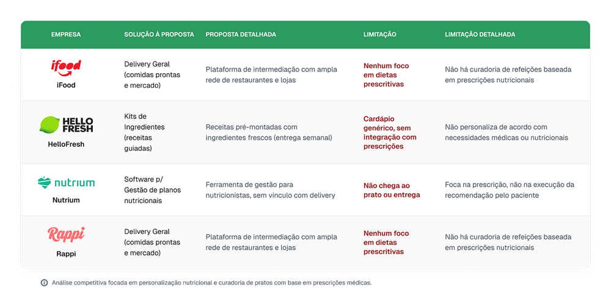
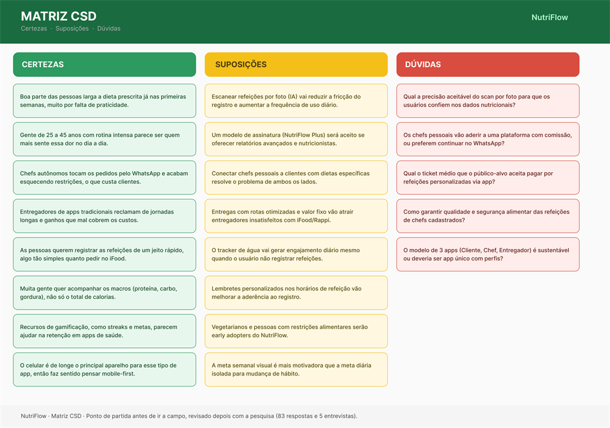
83 respondentes e 5 entrevistas em profundidade
Pesquisa quantitativa (83 respondentes via Google Forms) combinada com qualitativa (5 entrevistas remotas com clientes finais, de 20 a 30 min cada, por Google Meet).
O que apareceu nas entrevistas
“Eu tenho a dieta impressa na geladeira há 3 meses. Já segui por 2 semanas. O problema é que no dia a dia é impossível: você sai do trabalho às 8 da noite, tem filho esperando, quem vai cozinhar?”
Ana, 33 anos, gerente de marketing
“Se existisse um app que pegasse meu plano e transformasse em marmitas, eu pagaria fácil R$ 300 por mês.”
Thiago, 36 anos, analista de dados
Conclusão das entrevistas: as pessoas não largam a dieta por falta de vontade. Largam porque, no corre do dia a dia, não têm como executar o plano. 4 dos 5 entrevistados citaram o iFood como referência de conveniência.
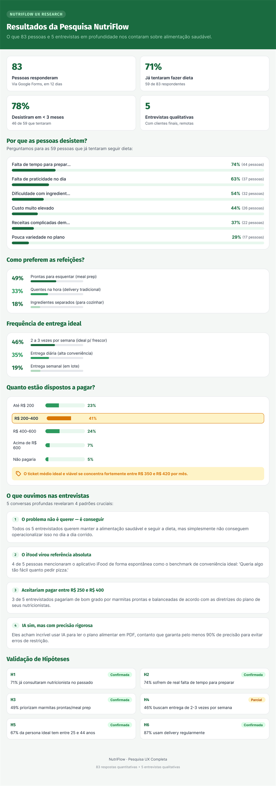
Persona e jornada do usuário
Com a persona na mão, mapeei como seria a primeira semana da Ana no app, fase a fase, para achar onde a experiência sobe e onde ela desanda. Mais do que listar telas, eu queria descobrir o momento mais frágil, aquele que decide se a pessoa continua ou desiste.
A curva de emoção apontou esse momento: logo no começo, quando o app precisa ler o plano dela. Se a IA erra a leitura de cara, a pessoa perde a confiança e dificilmente volta. Foi isso que me fez tratar a leitura do plano como a parte mais crítica do produto, e não um detalhe de onboarding.
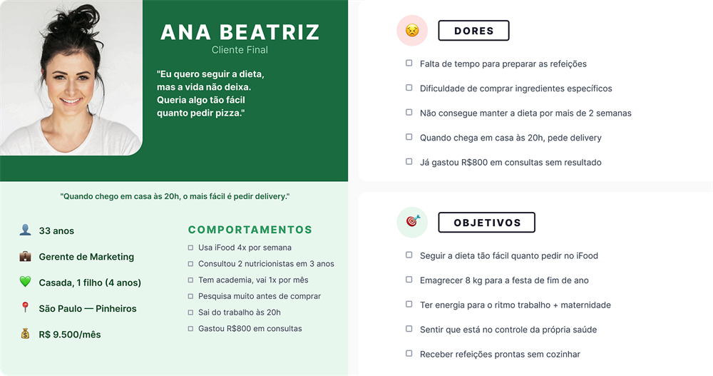
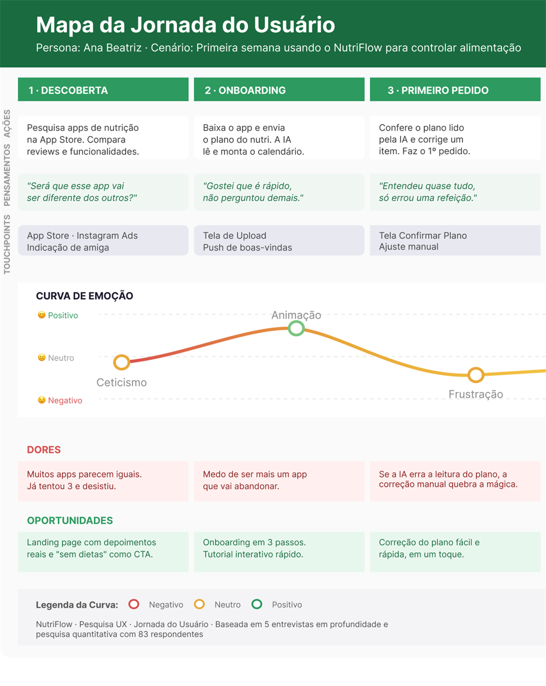
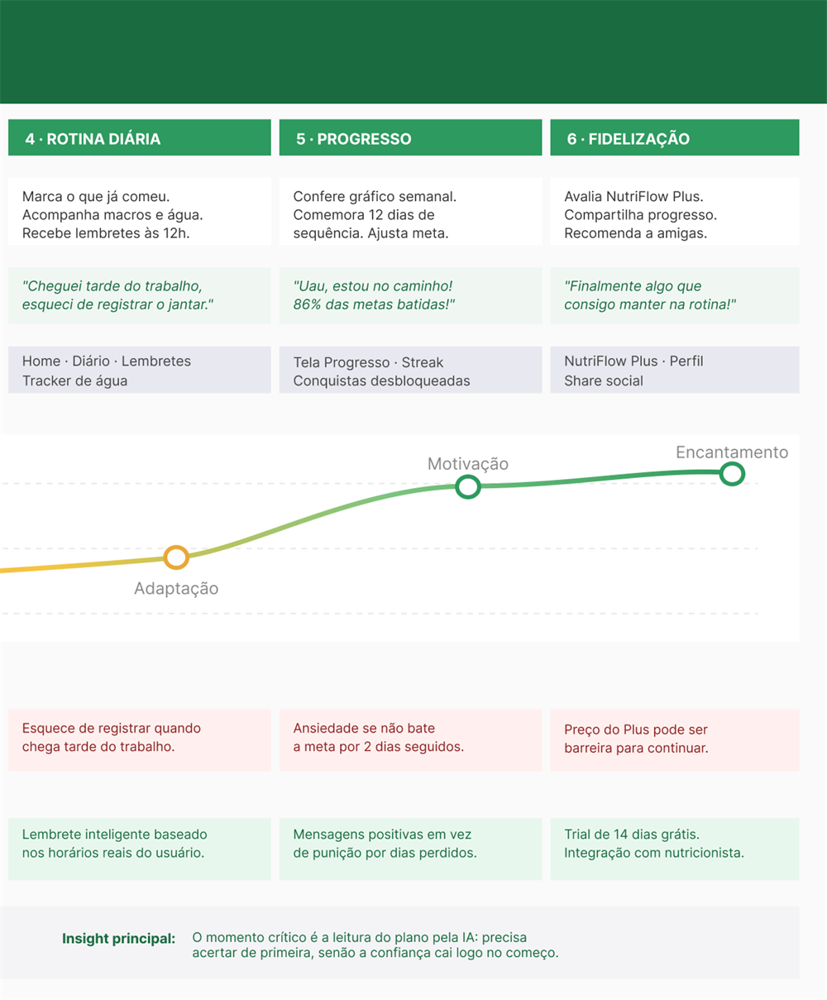
Um ecossistema de 3 apps, um MVP focado no Cliente
- Cliente · envia o plano alimentar do nutricionista e recebe as refeições prontas.
- Personal Chef · recebe os pedidos, compra ingredientes e prepara as refeições.
- Entregador · realiza as entregas conforme o plano.
Comecei pelo Cliente por um motivo simples: é ele quem sente a dor e quem paga a conta. Sem demanda validada desse lado, não faria sentido tocar o app do chef nem o do entregador. Por isso o recorte deste estudo é só o app do Cliente, do upload do plano até o pedido chegar na porta.
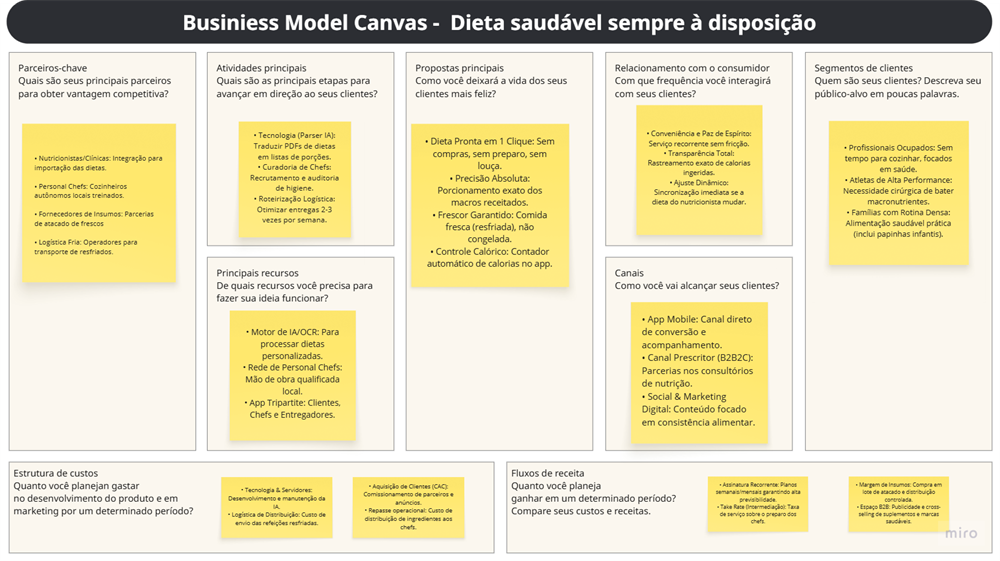
Workshops, HMW e wireframes
Depois de priorizar as ideias numa matriz de impacto x viabilidade, prototipei em baixa fidelidade os 4 fluxos principais: onboarding e upload, IA processando, Home (Meu Plano) e fazer pedido.
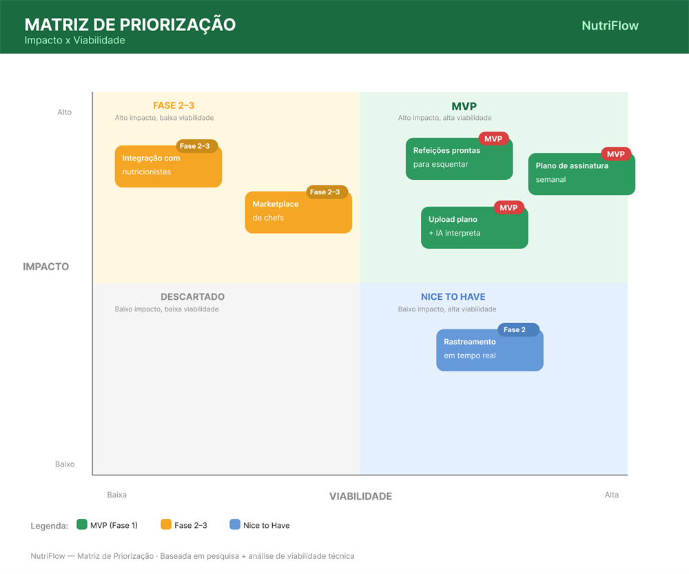
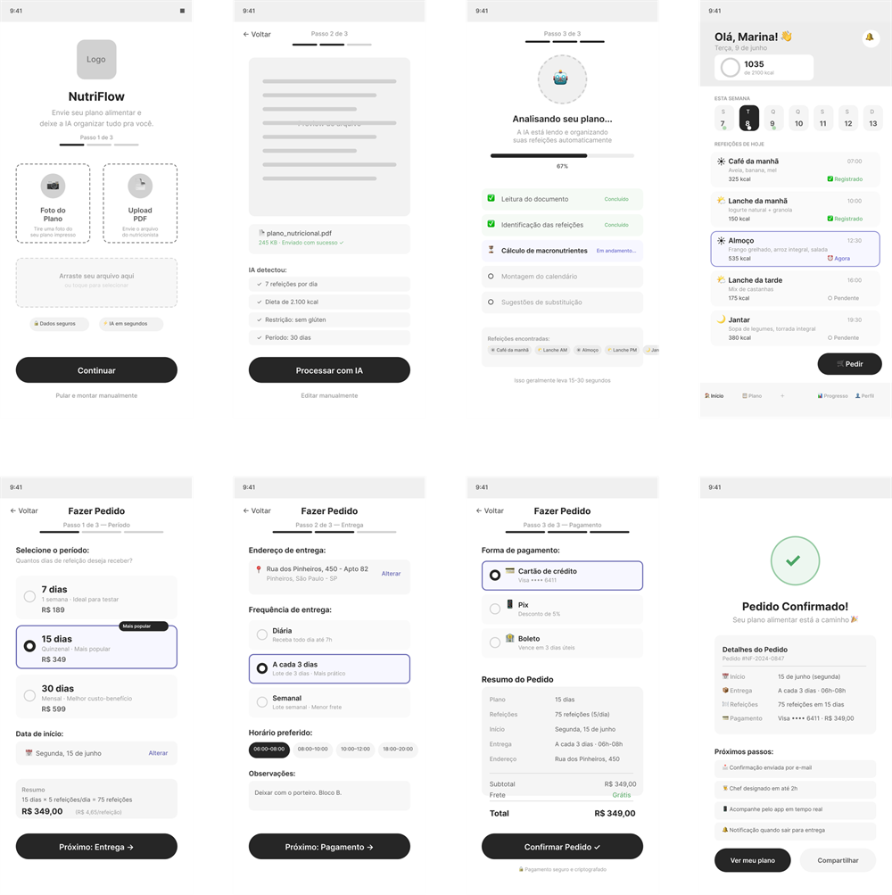
Design System
O verde é a cor base porque o app fala de comida e saúde, e verde já carrega essa ideia sem precisar explicar. Deixei o laranja só para o que pede atenção na hora (a refeição do momento, um alerta), para ele não competir com o verde no dia a dia.
Tipografia: Inter, fonte nativa do iOS 17+ e do Android 14+. Como as pessoas já convivem com ela todo dia, a leitura fica mais familiar (Lei de Jakob).
Acessibilidade: contraste mínimo 4.5:1 (WCAG AA), toque mínimo 44×44pt, Dynamic Type e labels em todos os ícones.
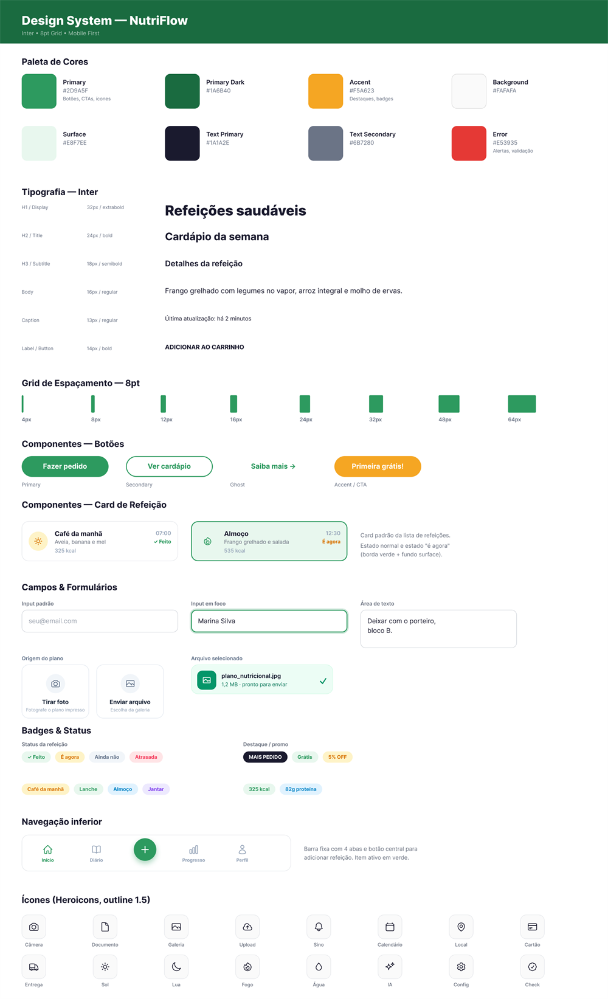
Três decisões guiaram as telas
1. A IA lê o plano, a pessoa não digita nada. A pesquisa mostrou que registrar comida na mão é justamente o que cansa e faz a galera largar apps como o MyFitnessPal. Se a proposta é tirar esforço do caminho, pedir para a pessoa cadastrar todas as refeições, todo dia, seria repetir o problema. Então ela fotografa o plano e a IA monta o calendário.
2. O pedido cabe em três passos: período, entrega e pagamento. Nas primeiras versões eu tinha mais etapas, e cada tela a mais era uma chance de desistir. Quanto mais perto da sensação de pedir comida, menor o atrito.
3. A Home responde uma pergunta só: “o que eu como agora?”. A refeição do horário atual fica em destaque e o resto fica secundário. Menos decisão na tela, menos brecha para furar a dieta.
Protótipo navegável
Explore o app por dentro Do upload do plano ao pedido chegar na porta, no fluxo de alta fidelidade.Teste de usabilidade
Teste moderado remoto com 5 participantes (25 a 45 anos, usuários de delivery), com protótipo Figma compartilhado via link + Google Meet, de 20 a 30 min por participante.
| Tarefa | Taxa de sucesso | Tempo médio | Erros |
|---|---|---|---|
| Upload do plano alimentar | 80% (4/5) | 1m 42s | 1 não encontrou PDF |
| Realizar um pedido | 100% (5/5) | 58s | Nenhum |
| Verificar detalhes da entrega | 60% (3/5) | 2m 10s | 2 aba errada |
| Avaliar refeição recebida | 100% (5/5) | 34s | Nenhum |
Erros críticos e correções
- O botão de enviar arquivo passava batido. Um participante não achou onde subir o plano. Enxuguei o upload para duas opções com o mesmo peso visual: tirar foto ou enviar da galeria.
- O rastreamento estava escondido numa aba. Duas pessoas procuraram o status da entrega no lugar errado. Movi um card de acompanhamento para a Home, onde elas olharam primeiro.
Como eu mediria o sucesso
Usei o framework HEART para não cair na métrica de vaidade. Download e número de pedidos contam, mas o que importa mesmo é a adesão: a pessoa continua seguindo a dieta depois de um mês? É esse número que diz se o produto resolve o problema ou só parece bonito.
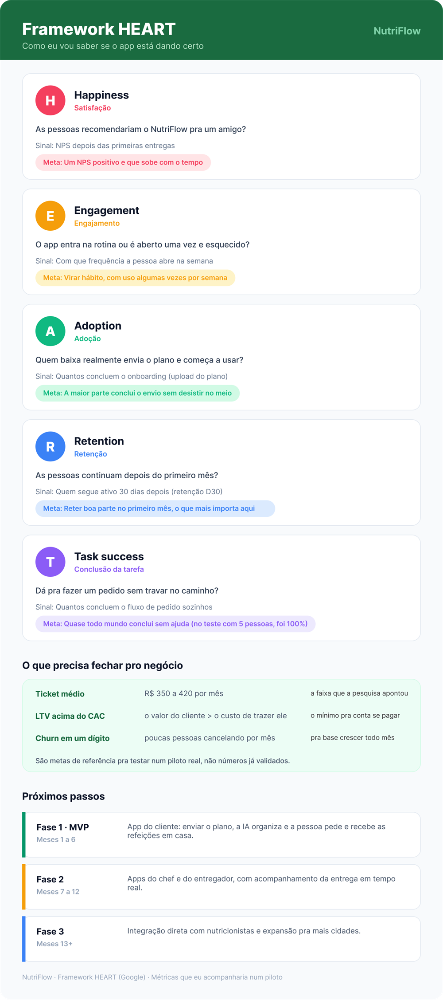
O que ficou
O NutriFlow não substitui o nutricionista. Ele só torna possível seguir o que o nutricionista já prescreveu.
O projeto nasceu de um problema real que afeta milhões de brasileiros: a distância entre o plano alimentar e a execução no dia a dia. A pesquisa deixou claro que o que trava as pessoas não é a motivação, e sim a falta de tempo e de praticidade: 78% abandonam a dieta em menos de 3 meses, e 74% apontam a falta de tempo como principal motivo.
Os testes remotos com 5 participantes mostraram que o caminho fazia sentido: o fluxo de pedido teve 100% de sucesso, em 58 segundos. O SUS de 78/100 indica boa usabilidade, ainda com espaço para melhorar.
Experimente o NutriFlow por dentro
Abra o protótipo navegável de alta fidelidade, ou veja a versão completa do case no Notion.